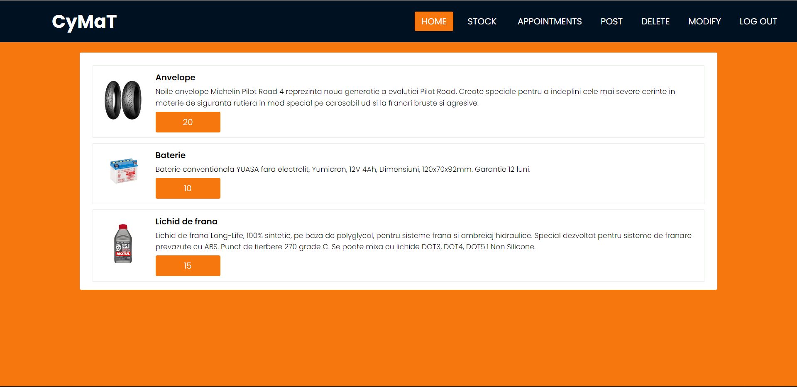
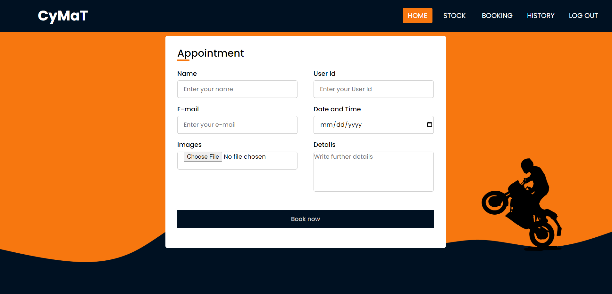
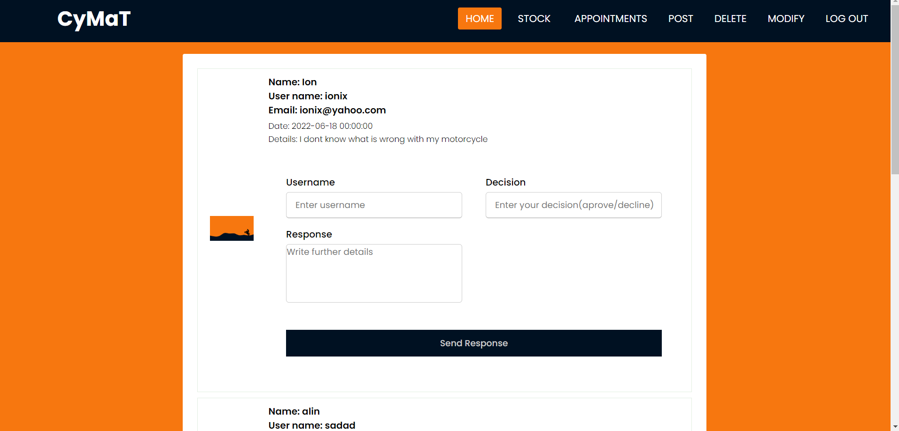
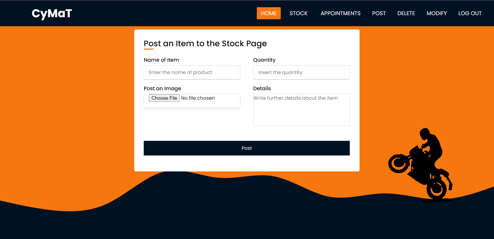
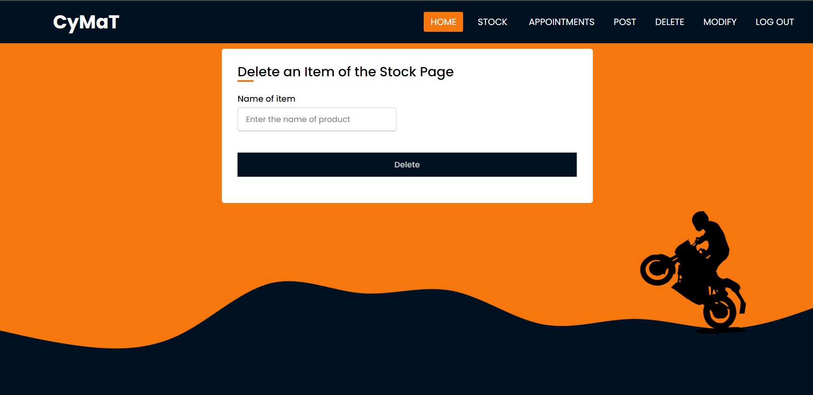
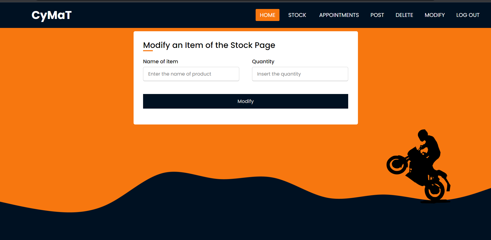

- Introduction
- Overall Description
- External Interface Requirements
- System Features
- Nonfunctional Features
- Stages of project development and our progress
- Bibliography
- Authors
Introduction
Purpose
Cymat is an online management system for scheduling and stocking a motorcycle service operation.
Intended Audience
This web application is intended for any user that wants to manage a motorcycle service operation.
Product Scope
The scope of this application is to easly manage a motorcycle service. Each client will consult the service's calendar and stock the service's equipment, after this they will be able to schedule a service operation by filling out a form with the date and time they prefer and some details about the problem. The administrator will then be able to either accept or decline the request.
References
We inspired from day-to-day work and needs in an auto service. We didn't have any other website as a model.
Overall description
Product Perspective
The product is a new, self-contained one, inspired in many ways by the day to day work in the field of maintenance, and is built for university purposes.
Product Functions
- Register and Log in
- Scheduling a service operation
- Check the service's stock
- The possibility to navigate without an account
- View the history of your appointments in the service. As the administrator of the website you will additionally be able to:
- View a list with all the appointments.
- You will have the ability to respond to appointments individually
- Update the service's stock, add, remove items or change the quantity of the parts.
Operating Environment
The software will operate in any web browser and will be available for all operating systems.
Design and Implementation Constraints
- Interface built with only HTML and CSS
- Mysql database
- No helping tools
- Limited language options(HTML,CSS,PHP)
External Interface Requirements
User Interfaces / User's guide
The user will have the possibility to sign in with his account or to create a new one with his name, email, username and password by pressing the Signup now button.
Also, an user will be able to check the service's stock by going to the "Stock" page.
The user will be able to schedule a service operation by filling out a form with the date and time they prefer and some details about the problem by going to "Booking" page.
The user will be able to view the history of his appointments in the service by going to the "History" page.
Additionally the administrator will be able to:
View a list with all the appointments and respond to them by going to the Appointments page and complete a form for each appointment individually.
Post a new Item in the stock by going to "Post" page and complete the formular.
Delete an item from the stock by going to "Delete" page and giving the product name.
Update the quantity of an item from the stock by going to "Modify" page and complete the form giving the name of the product and the quantity you want.
Hardware, Software and Communication Interfaces
The functions and features will be implemented using PHP and Mysql database.
System Features
Register
The "Register" feature will let the user to create an account with his name, email, username and password so he can connect to the web application.
Log In
The "Log In" feature will let the user to sign in to application with his created accound, by introducing his username and password.
Schedule Appointment
The Schedule an Appointment feature will let the user to complete a form to requets a service operation. The administrator will respond to the request later.
View Stock
The "View Stock" feature will let the user to check the actual stock of the service.
View history
The "View History" feature will let the user to view check the status of his appointments.
View Appointments
The "View Appointments" feature will let the administrator to see all the appointments and answer to them.
Update Stock
The "Update Stock" feature will let the administrator to update the actual stock by adding or deleteing items or by changing the quantity of them.
Security
The account security is provided by each user's choice for password.
Stages of project development and our progress
Thinking of the functionalities and feature needed.
We have started to think of the functionalities and features that we need to provide to the user and write them down.
Interface of the application
We have started to design the interface of the application for the needs of the user and to be able to implement the features.
Implementation of the features
1. We first implemented the login and register feature and data base table of users.
2. We implemented the feature to view the actual stock of the service and then to be able to be updated by the administrator, and created the database table for the items.
3. We implementd the feature to schedule and appointment for a service operation and the administrator to answer to the client's request for an appointment and the database table for the appointments.
4. We implement the feature to view the history of the appointments for each user.
5. We populate the tables and test the applications.
Version control system
For version controlling we used github.
We used github verry often for this project to always have a working application uploaded on github to go back to in case our local project has a problem, even if we pushed some really small updates.
Me and my collegue tried to divide our work so we can work on different features of the app (preferably on different tables from the db) at the same time, however there were moments when some features required the attention of both of us so we helped each other.